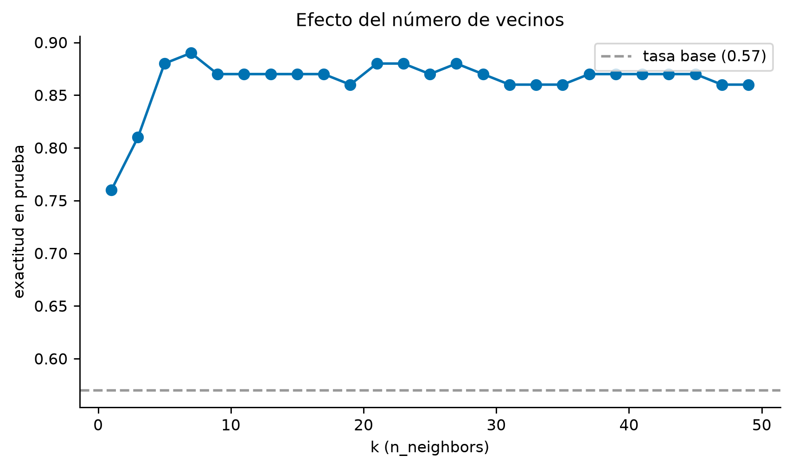
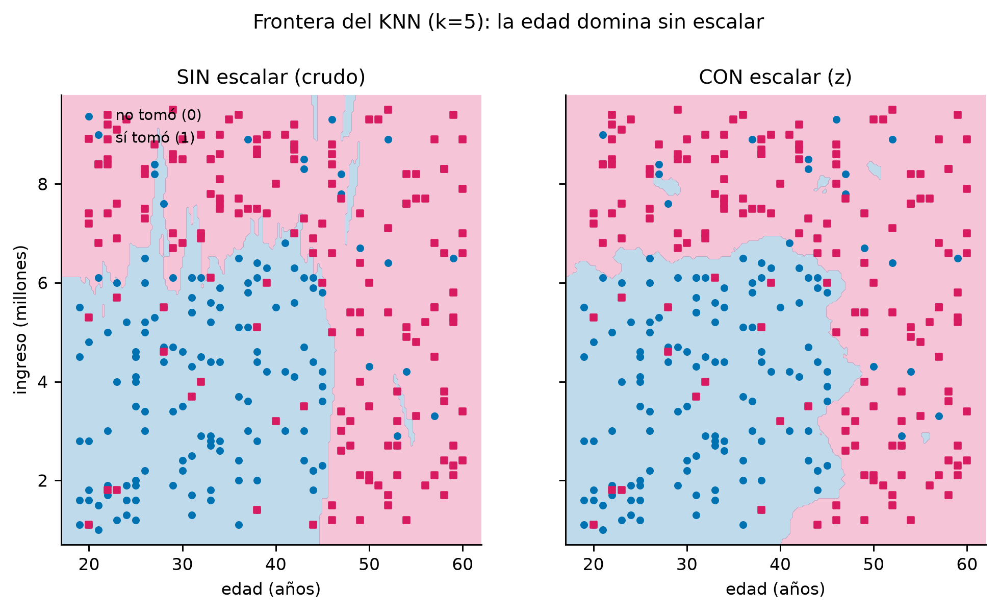

# =====================================================================
# IMPORTS del documento:
# numpy/pandas -> tablas y aritmética
# matplotlib -> frontera de decisión (sección sklearn)
# IPython -> imprimir Markdown enriquecido
# =====================================================================
import numpy as np
import pandas as pd
import matplotlib.pyplot as plt
from IPython.display import Markdown, display
def texto(md):
"""Imprime Markdown enriquecido en el output."""
display(Markdown(md))
plt.rcParams.update({"figure.dpi": 130, "font.size": 9,
"axes.spines.top": False, "axes.spines.right": False})06 · K-Nearest Neighbors: distancias, escalado y vecinos
Machine Learning · UTB 2026-II · KNN a mano y con scikit-learn sobre cartera_curso.csv
1 Para qué sirve este documento
Referencia completa de KNN para el parcial: la fórmula de la distancia, por qué hay que escalar las variables (la pregunta que ya te hicieron en la actividad del árbol), cómo predecir a mano un cliente nuevo con \(k\) vecinos, y el laboratorio completo con scikit-learn (KNeighborsClassifier + StandardScaler) sobre datos/cartera_curso.csv: matriz de confusión, efecto de \(k\), escalado sí/no, weights y frontera de decisión.
Los puntos donde puedes cambiar algo están marcados con CAMBIA AQUÍ en los comentarios.
2 La idea en 60 segundos
KNN es el modelo “más perezoso” que existe: no entrena nada. Guarda el historial completo y, cuando llega un cliente nuevo, busca a los \(k\) clientes del historial que más se le parecen (los vecinos más cercanos) y le asigna la clase mayoritaria entre ellos. “Se parece a sus vecinos.”
| Fase | Código | Qué pasa dentro de KNN |
|---|---|---|
| 1. Construir | KNeighborsClassifier(n_neighbors=5) |
Se fija cuántos vecinos votan (y con qué distancia). |
| 2. Entrenar | .fit(X_train, y_train) |
Solo memoriza los datos: no aprende ningún parámetro (por eso se llama lazy). |
| 3. Usar | .predict(X) |
Calcula la distancia del cliente nuevo a TODOS los del historial, toma los \(k\) más cercanos y vota. |
3 Las fórmulas
3.1 La distancia
Con dos variables (por ejemplo edad e ingreso), la distancia euclídea entre el cliente nuevo \(S\) y un cliente del historial \(C\) es:
\[d(S, C) = \sqrt{(S_{\text{edad}} - C_{\text{edad}})^2 + (S_{\text{ingreso}} - C_{\text{ingreso}})^2}\]
En general, la distancia de Minkowski (la que usa sklearn con metric="minkowski"):
\[d(S, C) = \left(\sum_i |S_i - C_i|^p\right)^{1/p} \qquad p=2 \Rightarrow \text{euclídea}, \quad p=1 \Rightarrow \text{manhattan}\]
3.2 El escalado (LA lección de KNN)
La distancia suma restas de variables distintas en una misma fórmula. Si la edad se mueve entre 20 y 60 años y el ingreso entre 1 y 10 millones, un año de edad y un millón pesan LO MISMO en la fórmula — pero un año no vale un millón. Sin escalar, la variable con números grandes manda en la distancia y las demás casi no votan.
La estandarización (la de StandardScaler) pone cada variable en comparable: media 0 y desviación 1:
\[z = \frac{x - \text{media}}{\text{desviación}}\]
(sklearn usa la desviación poblacional; en numpy es X.std(axis=0) sin ddof=1.)
3.3 La votación y la probabilidad
- Predicción con
weights="uniform": cada vecino vale 1 voto; gana la clase mayoritaria (empate en 2 clases → sklearn elige la clase 0). weights="distance": cada vecino vale \(1/d\) votos (los más cercanos mandan más).predict_proba= proporción de vecinos que votan por cada clase (con pesos si se usaron).
4 KNN a mano
# =====================================================================
# EL HISTORIAL: los 10 primeros clientes de cartera_curso.csv
# (ordenados por id, como en todo el curso).
# Tuplas: (cliente, edad, ingreso, tomo_credito)
# tomo_credito: 1 = sí tomó el crédito, 0 = no lo tomó
# CAMBIA AQUÍ si el parcial trae otra tabla de clientes.
# =====================================================================
clientes = [("C001", 45, 3.9, 0), ("C002", 45, 7.2, 1),
("C003", 32, 6.9, 1), ("C004", 24, 1.6, 0),
("C005", 28, 7.6, 0), ("C006", 47, 8.2, 0),
("C007", 53, 2.1, 1), ("C008", 54, 4.2, 0),
("C009", 32, 7.0, 0), ("C010", 53, 2.9, 0)]
df = pd.DataFrame(clientes, columns=["cliente", "edad", "ingreso", "tomo_credito"])
V = ["edad", "ingreso"] # las variables predictoras
X = df[V].values.astype(float) # matriz de números puros
y = df["tomo_credito"].values.astype(int) # las etiquetas 0/1
df| cliente | edad | ingreso | tomo_credito | |
|---|---|---|---|---|
| 0 | C001 | 45 | 3.9 | 0 |
| 1 | C002 | 45 | 7.2 | 1 |
| 2 | C003 | 32 | 6.9 | 1 |
| 3 | C004 | 24 | 1.6 | 0 |
| 4 | C005 | 28 | 7.6 | 0 |
| 5 | C006 | 47 | 8.2 | 0 |
| 6 | C007 | 53 | 2.1 | 1 |
| 7 | C008 | 54 | 4.2 | 0 |
| 8 | C009 | 32 | 7.0 | 0 |
| 9 | C010 | 53 | 2.9 | 0 |
4.1 Paso 1 · Estandarizar (media 0, desviación 1)
# =====================================================================
# El escalado se calcula SOLO con el historial (el "entrenamiento"):
# media y desviación de cada variable, y luego z = (x - media)/desv.
# OJO: desviación POBLACIONAL (np.std con ddof=0), la que usa
# StandardScaler de sklearn. Si la calculas a mano, divide por n
# (no por n-1).
# =====================================================================
media = X.mean(axis=0) # [media_edad, media_ingreso]
desv = X.std(axis=0) # [desv_edad, desv_ingreso] (ddof=0)
print(f"media: edad={media[0]:.1f} años, ingreso={media[1]:.2f} millones")
print(f"desv : edad={desv[0]:.3f} años, ingreso={desv[1]:.3f} millones")
dfz = df.copy()
dfz["z_edad"] = (df["edad"] - media[0]) / desv[0]
dfz["z_ingreso"] = (df["ingreso"] - media[1]) / desv[1]
Xz = dfz[["z_edad", "z_ingreso"]].values # historial escalado
dfz[["cliente", "edad", "ingreso", "z_edad", "z_ingreso", "tomo_credito"]].round(3)media: edad=41.3 años, ingreso=5.16 millones
desv : edad=10.696 años, ingreso=2.354 millones| cliente | edad | ingreso | z_edad | z_ingreso | tomo_credito | |
|---|---|---|---|---|---|---|
| 0 | C001 | 45 | 3.9 | 0.346 | -0.535 | 0 |
| 1 | C002 | 45 | 7.2 | 0.346 | 0.867 | 1 |
| 2 | C003 | 32 | 6.9 | -0.869 | 0.739 | 1 |
| 3 | C004 | 24 | 1.6 | -1.617 | -1.512 | 0 |
| 4 | C005 | 28 | 7.6 | -1.243 | 1.036 | 0 |
| 5 | C006 | 47 | 8.2 | 0.533 | 1.291 | 0 |
| 6 | C007 | 53 | 2.1 | 1.094 | -1.300 | 1 |
| 7 | C008 | 54 | 4.2 | 1.187 | -0.408 | 0 |
| 8 | C009 | 32 | 7.0 | -0.869 | 0.782 | 0 |
| 9 | C010 | 53 | 2.9 | 1.094 | -0.960 | 0 |
4.2 Paso 2 · Las distancias a un cliente nuevo
# =====================================================================
# FUNCIONES DEL "KNN A MANO". No se toca nada aquí para resolver otros
# casos: los datos viven arriba y los clientes nuevos en el Paso 3.
# =====================================================================
def distancias(X_usar, S):
"""Distancia euclídea del punto S a cada fila de X_usar.
Devuelve una Serie ordenada de más cerca a más lejos."""
d = np.sqrt(((X_usar - S) ** 2).sum(axis=1)) # fórmula de arriba
return pd.Series(d)
def votar_knn(X_usar, y_cli, S, k, nombres):
"""Predicción KNN con k vecinos, paso a paso:
1) distancias, 2) los k más cercanos, 3) votación.
Empate exacto de votos (k par) -> clase 0 (lo que hace sklearn).
"""
d = distancias(X_usar, S)
k_mas_cercanos = d.sort_values(kind="stable").head(k) # los k menores
votos = y_cli[k_mas_cercanos.index] # clases de esos vecinos
clase = int(votos.sum() > k / 2) # mayoria ESTRICTA;
# empate (k par) -> 0
tabla = pd.DataFrame({
"cliente": nombres[k_mas_cercanos.index],
"distancia": k_mas_cercanos.values.round(3),
"clase_del_vecino": votos})
return tabla, votos.sum(), k - votos.sum(), clase# =====================================================================
# ╔═════════════════════════════════════════════════════════════════╗
# ║ CAMBIA AQUÍ: el cliente nuevo. ║
# ║ S1 = (edad, ingreso) del solicitante. ║
# ╚═══════════════════════════════════════════════════════════════╝
# CASO 1: SIN escalar. Prueba con S1 = (40, 5.0) y k = 3.
S1 = np.array([40.0, 5.0]) # <- edad 40 años, ingreso 5.0 millones
K = 3 # <- número de vecinos: CÁMBIALO (3, 5, 7...)
tabla_votos, votos1, votos0, clase = votar_knn(X, y, S1, K, df["cliente"].values)
# distancias de TODOS, ordenadas (para la tabla 'a mano' del examen):
d_todos = distancias(X, S1)
tabla_d = df[["cliente", "edad", "ingreso", "tomo_credito"]].copy()
tabla_d["distancia"] = d_todos.values
tabla_d.sort_values("distancia").round(3)| cliente | edad | ingreso | tomo_credito | distancia | |
|---|---|---|---|---|---|
| 0 | C001 | 45 | 3.9 | 0 | 5.120 |
| 1 | C002 | 45 | 7.2 | 1 | 5.463 |
| 5 | C006 | 47 | 8.2 | 0 | 7.697 |
| 2 | C003 | 32 | 6.9 | 1 | 8.223 |
| 8 | C009 | 32 | 7.0 | 0 | 8.246 |
| 4 | C005 | 28 | 7.6 | 0 | 12.278 |
| 9 | C010 | 53 | 2.9 | 0 | 13.169 |
| 6 | C007 | 53 | 2.1 | 1 | 13.320 |
| 7 | C008 | 54 | 4.2 | 0 | 14.023 |
| 3 | C004 | 24 | 1.6 | 0 | 16.357 |
# La predicción SIN escalar: votan los k vecinos más cercanos.
print(f"Vecinos (sin escalar, k={K}):")
print(tabla_votos.to_string(index=False))
print(f"votos por clase 1: {votos1} | por clase 0: {votos0} "
f"-> predice clase {clase} "
f"({'TOMA el crédito' if clase == 1 else 'NO toma el crédito'})")Vecinos (sin escalar, k=3):
cliente distancia clase_del_vecino
C001 5.120 0
C002 5.463 1
C006 7.697 0
votos por clase 1: 1 | por clase 0: 2 -> predice clase 0 (NO toma el crédito)# ---------------------------------------------------------------------
# CASO 2: CON escalar. El mismo S1, ahora en z-scores, y el historial
# también escalado. Las distancias cambian -> los vecinos pueden cambiar.
# ---------------------------------------------------------------------
S1z = (S1 - media) / desv # el cliente nuevo, escalado
tabla_votos_z, votos1z, votos0z, clase_z = votar_knn(Xz, y, S1z, K, df["cliente"].values)
d_todos_z = distancias(Xz, S1z)
tabla_dz = df[["cliente", "edad", "ingreso", "tomo_credito"]].copy()
tabla_dz["distancia_z"] = d_todos_z.values
tabla_dz.sort_values("distancia_z").round(3)| cliente | edad | ingreso | tomo_credito | distancia_z | |
|---|---|---|---|---|---|
| 0 | C001 | 45 | 3.9 | 0 | 0.661 |
| 1 | C002 | 45 | 7.2 | 1 | 1.045 |
| 2 | C003 | 32 | 6.9 | 1 | 1.100 |
| 8 | C009 | 32 | 7.0 | 0 | 1.132 |
| 7 | C008 | 54 | 4.2 | 0 | 1.352 |
| 9 | C010 | 53 | 2.9 | 0 | 1.508 |
| 5 | C006 | 47 | 8.2 | 0 | 1.509 |
| 4 | C005 | 28 | 7.6 | 0 | 1.574 |
| 6 | C007 | 53 | 2.1 | 1 | 1.730 |
| 3 | C004 | 24 | 1.6 | 0 | 2.079 |
Vecinos (CON escalar, k=3):
cliente distancia clase_del_vecino
C001 0.661 0
C002 1.045 1
C003 1.100 1
votos por clase 1: 2 | por clase 0: 1 -> predice clase 1texto(f"""**Lo que acaba de pasar es LA lección del KNN.** Para el mismo
cliente S1 = (40 años, 5.0 millones) y el mismo $k$ = {K}:
* **Sin escalar** los vecinos quedan dominados por la edad (rango 24-54):
gana la clase **{clase}**.
* **Con escalar** el ingreso recupera su voto (la desviación del ingreso,
{desv[1]:.2f}, es mucho menor que la de la edad, {desv[0]:.1f}: sin
escalar, cada año valía mucho más que cada millón):
gana la clase **{clase_z}**.
Mismo cliente, mismo $k$, **predicción distinta**. Esa es la respuesta a
"¿por qué la actividad de KNN exigió escalar y el árbol no?": la distancia
de KNN mezcla las dos variables en una sola fórmula; el árbol pregunta
una variable a la vez y su umbral vive en la escala de esa variable.""")Lo que acaba de pasar es LA lección del KNN. Para el mismo cliente S1 = (40 años, 5.0 millones) y el mismo \(k\) = 3:
- Sin escalar los vecinos quedan dominados por la edad (rango 24-54): gana la clase 0.
- Con escalar el ingreso recupera su voto (la desviación del ingreso, 2.35, es mucho menor que la de la edad, 10.7: sin escalar, cada año valía mucho más que cada millón): gana la clase 1.
Mismo cliente, mismo \(k\), predicción distinta. Esa es la respuesta a “¿por qué la actividad de KNN exigió escalar y el árbol no?”: la distancia de KNN mezcla las dos variables en una sola fórmula; el árbol pregunta una variable a la vez y su umbral vive en la escala de esa variable.
4.3 Paso 3 · Un segundo solicitante (el flip contrario)
# ---------------------------------------------------------------------
# CASO 3: S2 = (38, 8.5). Aquí el flip es en la otra dirección:
# sin escalar predice 1 y con escalar predice 0.
# CAMBIA AQUÍ por el segundo solicitante de tu ejercicio.
# ---------------------------------------------------------------------
S2 = np.array([38.0, 8.5]) # <- edad 38, ingreso 8.5
S2z = (S2 - media) / desv
_, v1, v0, c_sin = votar_knn(X, y, S2, K, df["cliente"].values)
_, v1z, v0z, c_con = votar_knn(Xz, y, S2z, K, df["cliente"].values)
print(f"S2 = (38, 8.5), k={K}")
print(f" SIN escalar: votos 1={v1}, 0={v0} -> clase {c_sin}")
print(f" CON escalar: votos 1={v1z}, 0={v0z} -> clase {c_con}")
print(" (si da 1 sin escalar y 0 con escalar: el flip contrario a S1)")S2 = (38, 8.5), k=3
SIN escalar: votos 1=2, 0=1 -> clase 1
CON escalar: votos 1=1, 0=2 -> clase 0
(si da 1 sin escalar y 0 con escalar: el flip contrario a S1)4.4 Paso 4 · El efecto de \(k\)
# ---------------------------------------------------------------------
# ¿Y si cambiamos k? Con más vecinos, la votación se suaviza. Aquí
# barremos k = 1, 3, 5, 7 con el S1 escalado y miramos la predicción.
# CAMBIA AQUÍ la lista de k o el cliente.
# ---------------------------------------------------------------------
S1z = (S1 - media) / desv
filas_k = []
for k in [1, 3, 5, 7, 9]:
_, v1, v0, c = votar_knn(Xz, y, S1z, k, df["cliente"].values)
filas_k.append({"k": k, "votos_clase_1": int(v1), "votos_clase_0": int(v0),
"predicción": c})
pd.DataFrame(filas_k)| k | votos_clase_1 | votos_clase_0 | predicción | |
|---|---|---|---|---|
| 0 | 1 | 0 | 1 | 0 |
| 1 | 3 | 2 | 1 | 1 |
| 2 | 5 | 2 | 3 | 0 |
| 3 | 7 | 2 | 5 | 0 |
| 4 | 9 | 3 | 6 | 0 |
Lectura del efecto de \(k\):
- \(k\) pequeño (1, 3): el modelo escucha a muy pocos vecinos → sensible al ruido → sobreajuste (con \(k=1\) memoriza: cada cliente predice la clase de su vecino más cercano del historial).
- \(k\) grande: vota media ciudad → frontera demasiado simple → subajuste. Con \(k = n\) (todos), siempre gana la clase mayoritaria del historial: KNN degenerado.
- Regla práctica: \(k\) impar en problemas de 2 clases evita empates exactos de votos (y aún así el empate puede aparecer si hay empates de distancia; sklearn lo resuelve por la clase 0).
5 KNN con scikit-learn (laboratorio sobre la cartera)
# =====================================================================
# El reparto de siempre del curso: ordenar por id, los primeros 300
# entrenan, los últimos 100 prueban (75/25 sin azar).
# =====================================================================
from sklearn.neighbors import KNeighborsClassifier
from sklearn.preprocessing import StandardScaler
from sklearn.metrics import (accuracy_score, precision_score, recall_score,
f1_score, confusion_matrix)
datos = pd.read_csv("datos/cartera_curso.csv", sep=";", decimal=",")
d = datos.sort_values("id_cliente").reset_index(drop=True)
corte = int(np.floor(0.75 * len(d)))
X_train, y_train = d.loc[:corte-1, V].values, d.loc[:corte-1, "tomo_credito"].values
X_test, y_test = d.loc[corte:, V].values, d.loc[corte:, "tomo_credito"].values
print("entrenamiento:", X_train.shape, "| prueba:", X_test.shape)entrenamiento: (300, 2) | prueba: (100, 2)5.1 Los argumentos de KNeighborsClassifier
| argumento | de fábrica | qué controla | cuándo tocarlo |
|---|---|---|---|
n_neighbors |
5 |
cuántos vecinos votan | el parámetro estrella: 1 sobreajusta, muy grande subajusta |
weights |
'uniform' |
cuánto vale cada voto | 'distance' = los vecinos más cercanos pesan más (útil si \(k\) es grande) |
metric |
'minkowski' |
la familia de distancia | casi siempre se queda ahí |
p |
2 |
el exponente de Minkowski | 2 = euclídea, 1 = manhattan |
algorithm |
'auto' |
cómo busca los vecinos (KD-tree, etc.) | no se toca en exámenes: es solo velocidad |
leaf_size |
30 |
detalle interno de los árboles de búsqueda | no se toca |
n_jobs |
None |
cuántos núcleos usar | -1 = todos |
5.2 Entrenar (memorizar) y predecir
# =====================================================================
# LA SECUENCIA CORRECTA CON ESCALADO (memorízala para el parcial):
# 1) el scaler se AJUSTA (fit) SOLO con el entrenamiento
# 2) el scaler TRANSFORMA al entrenamiento y a la prueba
# Si haces fit del scaler con TODO (o con la prueba), la media y la
# desviación de la prueba se filtran al modelo: 'data leakage'.
# CAMBIA AQUÍ n_neighbors o weights para experimentar.
# =====================================================================
scaler = StandardScaler().fit(X_train) # paso 1: fit SOLO con train
A_train = scaler.transform(X_train) # paso 2: transformar train
B_test = scaler.transform(X_test) # paso 2: transformar test
knn = KNeighborsClassifier(
n_neighbors=5, # k: cuántos vecinos votan
weights="uniform", # cada vecino vale 1 voto
metric="minkowski", # distancia general...
p=2) # ...con p=2: euclídea (la de la actividad)
knn.fit(A_train, y_train) # SOLO memoriza los datos
print(f"exactitud en prueba : {knn.score(B_test, y_test):.3f}")
print(f"exactitud en entrenamiento : {knn.score(A_train, y_train):.3f}")exactitud en prueba : 0.880
exactitud en entrenamiento : 0.873# =====================================================================
# VERIFICACIÓN 'A MANO' de lo que hace predict: kneighbors() devuelve
# los k vecinos más cercanos de cada cliente (distancias e índices).
# La predicción es la clase mayoritaria de esos índices; la
# probabilidad es la proporción. Comprobamos con el primer cliente.
# =====================================================================
i = 0 # el cliente de prueba número i
d_vec, idx_vec = knn.kneighbors(B_test[i:i+1]) # sus k vecinos
print("cliente de prueba:", d.loc[corte + i, "id_cliente"],
"| edad =", X_test[i, 0], "| ingreso =", X_test[i, 1])
print("k vecinos (índices del entrenamiento):", idx_vec[0])
print("distancias:", d_vec[0].round(3))
print("clases de esos vecinos:", y_train[idx_vec[0]])
print("mayoría ->", knn.predict(B_test[i:i+1])[0],
"| proporción clase 1 ->", knn.predict_proba(B_test[i:i+1])[0, 1])cliente de prueba: C301 | edad = 48.0 | ingreso = 7.2
k vecinos (índices del entrenamiento): [ 50 227 24 1 210]
distancias: [0.116 0.216 0.216 0.252 0.253]
clases de esos vecinos: [1 0 1 1 0]
mayoría -> 1 | proporción clase 1 -> 0.65.3 Matriz de confusión y métricas
# Predicciones de los 100 clientes de prueba y sus métricas
# (las llamadas con argumentos por nombre, como en el documento 04).
clase = knn.predict(B_test)
VN, FP, FN, VP = confusion_matrix(y_true=y_test, y_pred=clase,
labels=[0, 1]).ravel() # VN, FP, FN, VP
exactitud = accuracy_score(y_true=y_test, y_pred=clase)
precision = precision_score(y_true=y_test, y_pred=clase,
pos_label=1, zero_division=0)
recall = recall_score(y_true=y_test, y_pred=clase, pos_label=1)
f1 = f1_score(y_true=y_test, y_pred=clase, pos_label=1)
tasa_base = max(y_test.mean(), 1 - y_test.mean())
pd.DataFrame({
"métrica": ["tasa base", "exactitud", "precisión", "recall", "F1"],
"valor": [tasa_base, exactitud, precision, recall, f1]}).round(3)| métrica | valor | |
|---|---|---|
| 0 | tasa base | 0.570 |
| 1 | exactitud | 0.880 |
| 2 | precisión | 0.895 |
| 3 | recall | 0.895 |
| 4 | F1 | 0.895 |
| pred. 0 | pred. 1 | total | |
|---|---|---|---|
| real 0 (no tomó) | 37 | 6 | 43 |
| real 1 (sí tomó) | 6 | 51 | 57 |
| total | 43 | 57 | 100 |
5.4 El efecto de \(k\) (con los 300/100 de verdad)
# =====================================================================
# Exactitud en prueba para k = 1, 3, 5, ..., 49. La forma típica:
# k=1 bajo (sobreajusta), sube rápido, meseta; k enorme bajaría hacia
# la clase mayoritaria (subajuste).
# =====================================================================
ks = list(range(1, 50, 2)) # CAMBIA AQUÍ el rango de k
accs = []
for k in ks:
m = KNeighborsClassifier(n_neighbors=k).fit(A_train, y_train)
accs.append(m.score(B_test, y_test))
fig, ax = plt.subplots(figsize=(7.5, 4))
ax.plot(ks, accs, "o-", color="#0072B2")
ax.axhline(tasa_base, ls="--", color="#999999",
label=f"tasa base ({tasa_base:.2f})")
ax.set_xlabel("k (n_neighbors)")
ax.set_ylabel("exactitud en prueba")
ax.set_title("Efecto del número de vecinos")
ax.legend()
mejor_k = ks[int(np.argmax(accs))]
print(f"mejor k de la lista: {mejor_k} con exactitud {max(accs):.3f}")
print(f"k=1 (sobreajuste): {accs[0]:.3f} | k=49: {accs[-1]:.3f}")mejor k de la lista: 7 con exactitud 0.890
k=1 (sobreajuste): 0.760 | k=49: 0.860
5.5 ¿Escalar sí o no? (con los 300/100 de verdad)
# =====================================================================
# La comparación honesta: ¿cuánto cuesta NO escalar en esta cartera?
# OJO con la lectura: con SOLO dos variables, la edad (más informativa
# aquí) manda sin escalar y el golpe es suave. El daño del 'sin escalar'
# crece con más variables desbalanceadas. Lo que SÍ es seguro: escalar
# CAMBIA las vecindades (y con ellas la predicción, como en S1/S2).
# =====================================================================
filas = []
for k in [1, 3, 5, 7, 15, 31, 99]: # CAMBIA AQUÍ los k a comparar
m_e = KNeighborsClassifier(n_neighbors=k).fit(A_train, y_train)
m_n = KNeighborsClassifier(n_neighbors=k).fit(X_train, y_train)
filas.append({"k": k,
"prueba_escalado": m_e.score(B_test, y_test),
"prueba_sin_escalar": m_n.score(X_test, y_test)})
pd.DataFrame(filas).round(3)| k | prueba_escalado | prueba_sin_escalar | |
|---|---|---|---|
| 0 | 1 | 0.76 | 0.81 |
| 1 | 3 | 0.81 | 0.81 |
| 2 | 5 | 0.88 | 0.85 |
| 3 | 7 | 0.89 | 0.89 |
| 4 | 15 | 0.87 | 0.90 |
| 5 | 31 | 0.86 | 0.88 |
| 6 | 99 | 0.86 | 0.73 |
Dos lecturas de esa tabla:
- A \(k\) chico-medio las dos versiones compiten (la edad es muy informativa en esta cartera y ella sola ya clasifica bastante bien). Eso no significa que escalar no importe: significa que aquí la variable dominante era la buena.
- A \(k\) grande la versión sin escalar se cae (con \(k=99\) ya casi vota media cartera). Y en el ejemplo a mano (S1, S2) vimos el mecanismo puro: las vecindades cambian y con ellas la predicción.
5.6 weights: votos uniformes o por cercanía
# weights='distance': cada vecino vale 1/distancia. Con vecinos muy
# cercanos y otros lejanos, los cercanos deciden. Útil sobre todo con
# k grande. CAMBIA AQUÍ los k.
filas = []
for k in [5, 15, 31, 99]:
m_u = KNeighborsClassifier(n_neighbors=k, weights="uniform").fit(A_train, y_train)
m_d = KNeighborsClassifier(n_neighbors=k, weights="distance").fit(A_train, y_train)
filas.append({"k": k,
"uniform": m_u.score(B_test, y_test),
"distance": m_d.score(B_test, y_test)})
pd.DataFrame(filas).round(3)| k | uniform | distance | |
|---|---|---|---|
| 0 | 5 | 0.88 | 0.82 |
| 1 | 15 | 0.87 | 0.88 |
| 2 | 31 | 0.86 | 0.88 |
| 3 | 99 | 0.86 | 0.89 |
5.7 La frontera de decisión
# =====================================================================
# La FRONTERA: pintamos qué clase predice el KNN en cada punto del
# plano edad x ingreso. Izquierda: sin escalar (la edad estira el eje x
# y sus cortes dominan). Derecha: con escalar (las dos variables votan
# parejo). Es la misma lección de S1, ahora viéndola en todo el mapa.
# =====================================================================
fig, axes = plt.subplots(1, 2, figsize=(9, 4.4), sharey=True)
gx = np.linspace(d["edad"].min() - 2, d["edad"].max() + 2, 200)
gy = np.linspace(d["ingreso"].min() - 0.3, d["ingreso"].max() + 0.3, 200)
XX, YY = np.meshgrid(gx, gy)
malla = np.column_stack([XX.ravel(), YY.ravel()])
for ax, esc in zip(axes, [False, True]):
if esc:
m = KNeighborsClassifier(n_neighbors=5).fit(A_train, y_train)
Z = m.predict(scaler.transform(malla)).reshape(XX.shape)
else:
m = KNeighborsClassifier(n_neighbors=5).fit(X_train, y_train)
Z = m.predict(malla).reshape(XX.shape)
ax.contourf(XX, YY, Z, alpha=0.25, levels=[-0.5, 0.5, 1.5],
colors=["#0072B2", "#D81B60"])
ax.scatter(*X_train[y_train == 0].T, s=10, c="#0072B2", label="no tomó (0)")
ax.scatter(*X_train[y_train == 1].T, s=10, c="#D81B60", marker="s",
label="sí tomó (1)")
ax.set_xlabel("edad (años)")
ax.set_title("CON escalar (z)" if esc else "SIN escalar (crudo)")
axes[0].set_ylabel("ingreso (millones)")
axes[0].legend(loc="upper left", fontsize=8, frameon=False)
fig.suptitle("Frontera del KNN (k=5): la edad domina sin escalar", y=1.02);
6 KNN contra el árbol y el bosque
# Tres modelos, el mismo reparto 300/100, para ubicar el KNN.
# OJO: el KNN se entrenó con datos ESCALADOS, así que se evalúa con la
# prueba ESCALADA (B_test); árbol y bosque se entrenaron crudos, así que
# se evalúan con la prueba cruda (X_test).
from sklearn.tree import DecisionTreeClassifier
from sklearn.ensemble import RandomForestClassifier
knn7 = KNeighborsClassifier(n_neighbors=7).fit(A_train, y_train)
arbol2 = DecisionTreeClassifier(criterion="gini", max_depth=2,
min_samples_leaf=5,
random_state=0).fit(X_train, y_train)
bosque2 = RandomForestClassifier(n_estimators=200, random_state=0,
n_jobs=-1).fit(X_train, y_train)
pd.DataFrame([
{"modelo": "KNN k=7 (escalado)", "exactitud prueba": knn7.score(B_test, y_test)},
{"modelo": "Árbol max_depth=2", "exactitud prueba": arbol2.score(X_test, y_test)},
{"modelo": "Random Forest 200", "exactitud prueba": bosque2.score(X_test, y_test)}
]).round(3)| modelo | exactitud prueba | |
|---|---|---|
| 0 | KNN k=7 (escalado) | 0.89 |
| 1 | Árbol max_depth=2 | 0.90 |
| 2 | Random Forest 200 | 0.85 |
| KNN | Árbol | Bosque | |
|---|---|---|---|
| necesita escalar | sí (distancias mezclan variables) | no (preguntas por variable) | no |
| se puede leer como reglas | no | sí | no |
| entrena | no memoriza nada… o sea, memoriza TODO | aprende cortes | aprende 200 árboles |
| predicción cara cuando | hay muchos datos (calcula distancias a todos) | barata: baja por el árbol | 200 bajadas por árbol |
7 Respuestas conceptuales para el parcial
- ¿Por qué KNN escala y el árbol no? La distancia de KNN suma restas de variables distintas en una misma fórmula: sin escalar, la variable con números grandes decide sola (aquí, la edad). El árbol compara cada variable consigo misma (“¿ingreso ≤ 6.55?”), así que la escala de una nunca se mezcla con la de la otra.
- ¿Por qué \(k\) impar? Con 2 clases, un \(k\) impar evita el empate exacto de votos. Si aun así hay empate (vecinos a la misma distancia), sklearn predice la clase 0.
- \(k=1\) : el modelo repite la etiqueta del vecino más cercano → memoriza ruido → sobreajuste. \(k\) enorme → vota media cartera → subajuste.
- KNN es lazy:
.fitno aprende nada (guarda los datos); todo el costo está en.predict, que calcula distancias a todo el historial. Con muchos datos, predecir se vuelve lento. - Ventaja: sin supuestos sobre la forma de la frontera; captura regiones raras. Desventajas: sensible a variables irrelevantes y a muchas dimensiones (la “maldición de la dimensionalidad”: con muchas variables, todas las distancias se parecen y el “vecino” deja de ser significativo).
8 Resumen ejecutivo (para el parcial)
| Pregunta corta | Respuesta corta |
|---|---|
| ¿Qué hace KNN para predecir? | Busca los \(k\) clientes del historial más cercanos (euclídea) y vota la clase mayoritaria. |
¿Qué es .fit en KNN? |
Memorizar los datos: no aprende parámetros. |
| ¿Por qué escalar? | La distancia mezcla escalas; sin escalar, la variable de números grandes manda (S1: cambia 0→1). |
| ¿Cómo se escala? | \(z = (x-\text{media})/\text{desv}\), con media y desv del entrenamiento, aplicadas también a la prueba. |
¿predict_proba? |
La proporción de los \(k\) vecinos que votan cada clase. |
| ¿Cuándo falla? | \(k=1\) (ruido), \(k\) enorme (mayoritaria), variables sin escalar, muchas variables irrelevantes. |